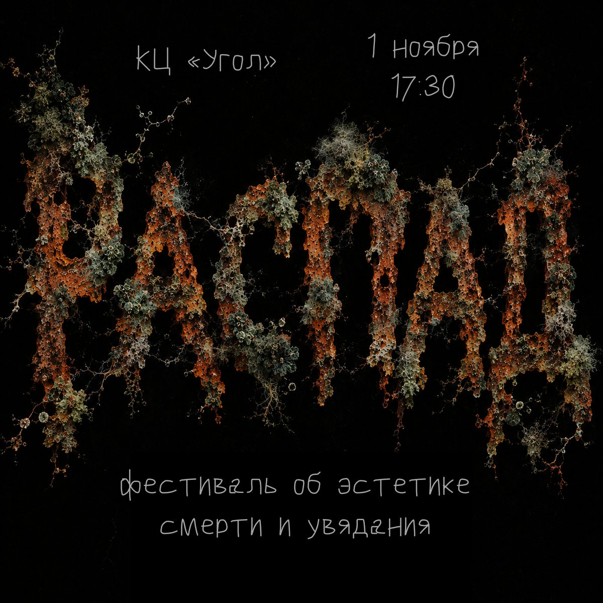

Расписание
| Зал 1 | Зал 2 | |
|---|---|---|
| 17:30–19:15 | Лекции | Калейдоскопы |
| 19:15–20:00 | Лекции | Психологическая практика |
| 20:00–21:00 | Театральные практики | Стихи |
| 21:00–22:30 | Музыка | Death cafe |
| 22:30–00:00 | Музыка | Пахаванне дзеда |
Также в зале 2 будет коллажный стол и зона для макияжа. В случае хорошей погоды театральные практики вынесем на улицу.
Лекции
Жили-были, так и померли: о культе смерти в славянском фольклореГригорий Бушуев, социальный исследователь, куратор культурных проектов, экскурсовод
Почему Снегурочку не выпускают играть на Ивана-Купала? Почему Баба-Яга живёт в избушке на курьей ножке? Почему смерть Кощея спрятана так далеко: в игле, в яйце, в утке, в зайце и в сундуке? Почему растрёпанную девушку принимали за навку и бежали прочь? Для кого изначально рассказывались сказки и почему смерть то и дело оказывается в самом центре славянского фольклора?
Камбоджа и заложные покойницыАнна Григорьева, студентка восточного факультета СПбГУ, лаборант в Кунсткамере (отдел АОИ)
Почему трупная жидкость считается волшебной? Как связаны медиумизм и насилие? И почему эмбрион обладает такой магической мощью, что мужчина готов вырвать его из материнского тела (буквально), дабы присвоить себе и сделать своим «ребенком»? Все эти (и многие другие вопросы) мы обсудим на лекции.
Мозг на пороге: что происходит, когда мы умираемАнтон Ямпольский, клинический психолог, сотрудник Института Когнитивных Нейронаук ВШЭ
Что видит мозг, когда сердце уже остановилось? Почему у части «безнадёжных» пациентов в реанимации сознание сохраняется, хотя снаружи они не подают ни единого признака жизни? Откуда берутся ярчайшие «воспоминания о смерти» у некоторых переживших остановку сердца? И правда ли, что умирающий мозг на какое-то время не затихает, а, наоборот, вспыхивает?
Стихи
- Алексей Михайлов
- Ольга Учуськина
- Пётр Попов
- прозрачен
- Тимофей Ляховский
Музыка
Активности
- калейдоскопы (Ася Тайга)
- психологическая практика (Наталья Жесткова)
- коллажи (monodromy)
- театральные практики (Йеня)
- Death Cafe (Константин Филиппов)
Ведущий: Ваня Яковлев